The viz surface at a glance
| kind | functions | use when |
|---|---|---|
| composable layers |
geom_calendar(), geom_calendar_tile(),
theme_calendar(), calendar_breaks()
|
you are building your own ggplot() and want
data-on-calendar tiles as one layer among others |
| assembled figures |
calendar_autoplot() (structure icicle),
calendar_plot() (heatmap),
calendar_wall_plot() (wall calendar) |
you want a finished figure in one call |
| layout workers |
calendar_layout(), calendar_wall_layout(),
calendar_weekdays()
|
you want the plain data frames behind the figures, to draw something the package did not anticipate |
This vignette walks through all three tiers on one running example — and because every axis is an ordinary vocabulary-ordered factor, everything composes with standard ggplot2 scales, facets, and themes.
The sample
merra2_cities ships three contrasting hourly weather
series for 2019 — Helsinki (high latitude), Lima (equatorial), Sydney
(southern hemisphere) — extracted from NASA’s MERRA-2 reanalysis:
str(merra2_cities)
#> 'data.frame': 105120 obs. of 11 variables:
#> $ city : chr "Beijing" "Beijing" "Beijing" "Beijing" ...
#> $ locid : int 150235 150235 150235 150235 150235 150235 150235 150235 150235 150235 ...
#> $ datetime : POSIXct, format: "2019-01-01 00:30:00" "2019-01-01 01:30:00" ...
#> $ T10M : num -10 -9 -6 -3 -2 -1 0 0 -2 -3 ...
#> $ W10M : num 4.9 5.9 6.2 5.9 5.7 ...
#> $ W50M : num 6.8 7 7.1 6.9 6.8 ...
#> $ WDIR : num 140 150 160 160 160 160 160 170 160 150 ...
#> $ SWGDN : num 79 211 331 411 444 416 330 191 43 0 ...
#> $ ALBEDO : num 0.18 0.16 0.15 0.14 0.14 ...
#> $ PRECTOTCORR: num 0 0 0 0 0 0 0 0 0 0 ...
#> $ RHOA : num 1.34 1.34 1.32 1.31 1.3 ...Instants are stamped at 30 minutes past the hour (the MERRA-2
hourly-mean convention); datetime_to_timeslice() floors
them into hourly timeslices, so no preprocessing is needed.
The integration contract
The geoms are deliberately thin. Each one returns a
single standard geom_tile() layer whose data is
derived from the plot (or layer) data; nothing is a custom ggproto Geom
or Stat. That has three visible consequences:
-
Calendar inputs are column names, not
aes()mappings —datetime =,timeslice =,z =name columns of the data. ggplot2 trains positional scales before statistics run, so a Stat cannot emit the discrete axes a calendar heatmap needs; a layer factory that pre-aggregates can. (The predecessor package solved this with ~340 lines of customscale_x/y_calendarmachinery — deliberately not ported.) -
Axes are vocabulary-ordered factors, so
scale_x_discrete(),facet_wrap(), coordinate flips, and themes all work through the normal ggplot2 path. Dense vocabularies thin cleanly withcalendar_breaks(), which always keeps the end values on the axis. Fiscal calendars order themselves: anfy04_*axis starts atm04because that is its member order. -
Facet columns ride through
by =— aggregation happens within each combination of the listed columns, and those columns survive into the layer data, ready forfacet_wrap().
Heatmaps: data on a calendar
geom_calendar() cuts a datetime column to timeslices and
aggregates into tiles. Helsinki wind on the full-resolution
d365_h24 calendar, with energypal’s Global Wind Atlas
ramp:
hel <- merra2_cities |> filter(city == "Helsinki")
ggplot(hel) +
geom_calendar(calendar = calendars$d365_h24,
datetime = "datetime", z = "W50M") +
energypal::scale_fill_energy_c(palette = "windatlas") +
scale_x_discrete(breaks = calendar_breaks(10)) +
scale_y_discrete(breaks = calendar_breaks()) +
labs(x = "day of year", y = "hour", fill = "m/s",
title = "Helsinki wind speed at 50 m, 2019") +
theme_calendar()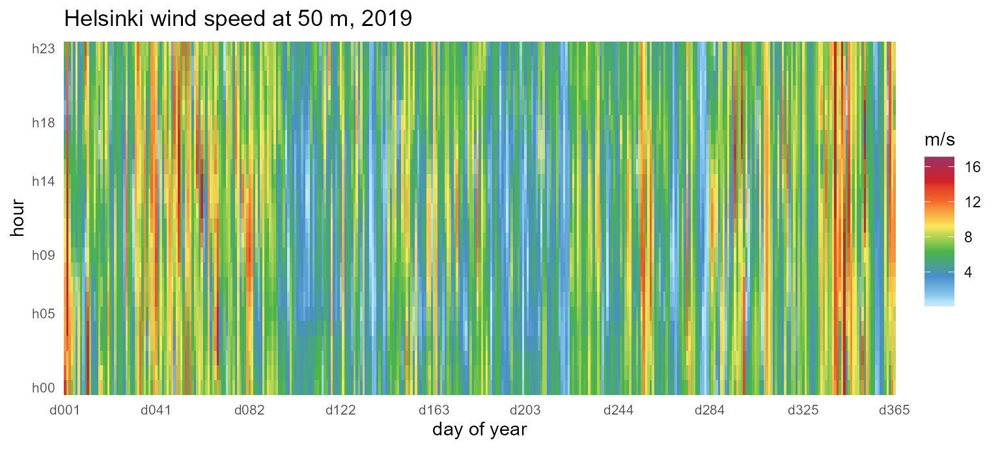
The representative-day view compresses the same year into
m12_h24 (month x hour), and the by= argument
carries the city column through aggregation so facets work.
calendar_breaks() keeps the twelve-month and 24-hour axes
legible inside narrow facets while pinning the end values. Times are
UTC, so each city’s solar noon sits at its longitude’s offset (Lima
~16h, Sydney ~01h — a calendar with utc_offset_minutes
shifts this to local time):
ggplot(merra2_cities) +
geom_calendar(calendar = calendars$m12_h24,
datetime = "datetime", z = "SWGDN", by = "city") +
facet_wrap(~city) +
energypal::scale_fill_energy_c(palette = "solaratlas_ghi") +
scale_x_discrete(breaks = calendar_breaks(4)) +
scale_y_discrete(breaks = calendar_breaks()) +
labs(x = "month", y = "hour", fill = "W/m2",
title = "Mean solar irradiance by month and hour, 2019") +
theme_calendar()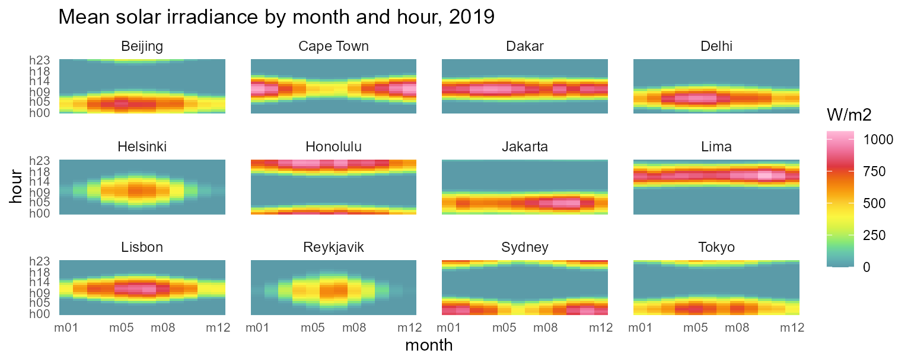
Wall calendars
calendar_wall_plot() puts the same daily story in the
familiar wall form: one facet per month, day cells in a week grid,
weekday initials across the top. The hourly datetimes are detected
automatically and collapse into day cells with fun:
calendar_wall_plot(calendar("m12_md365"), hel, z = "T10M",
year = 2019) +
scale_fill_viridis_c(option = "H") +
labs(fill = "degC",
title = "Helsinki daily mean temperature, 2019")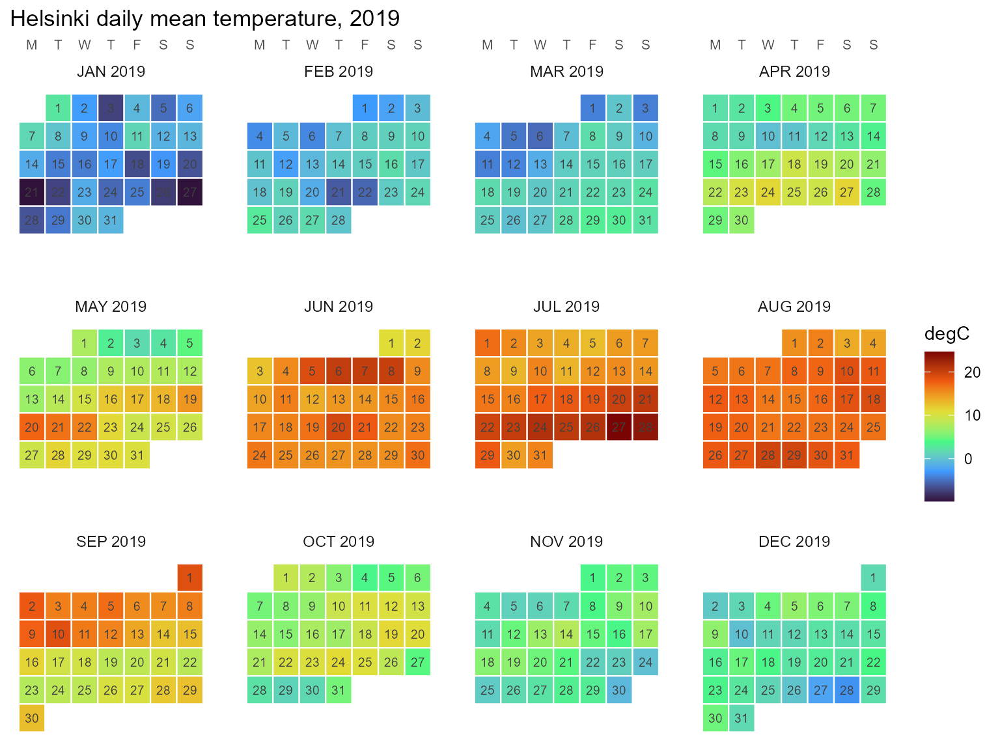
The weekday arrangement needs year= (which weekday a
date falls on is a fact about the year); week_start accepts
any of MON..SUN. See vignette("calendars") for
the wall details and calendar_weekdays() for the underlying
table.
Timeslice-keyed data
Once data lives on timeslices, geom_calendar_tile()
draws it directly, and join_calendar() attaches timeframe
columns for manual workflows:
cal <- calendars$m12_h24
hel_timeslices <- hel |>
mutate(timeslice = datetime_to_timeslice(datetime, cal)) |>
summarise(T10M = mean(T10M), .by = timeslice)
ggplot(hel_timeslices) +
geom_calendar_tile(calendar = cal, z = "T10M") +
scale_fill_viridis_c(option = "H") +
scale_x_discrete(breaks = calendar_breaks()) +
scale_y_discrete(breaks = calendar_breaks()) +
labs(x = "month", y = "hour", fill = "degC",
title = "Helsinki mean temperature (m12_h24)") +
theme_calendar()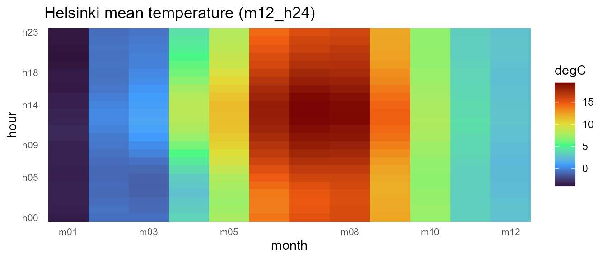
Recasting across calendars
Timeslice-keyed panels recast between any two calendars, and
identifier columns like city are preserved as grouping
columns — the same mechanics that let mixed pipelines chain
x |> recast_calendar(...) |> recast_geoscale(...).
Aggregate all three cities onto m12_h24, then move the
panel across resolutions:
panel <- merra2_cities |>
mutate(timeslice = datetime_to_timeslice(datetime, cal)) |>
summarise(across(c(T10M, W50M), mean), .by = c(city, timeslice))
# month x hour -> quarter x hourtype (cross-cutting hierarchies)
panel |>
recast_calendar(cal, calendars$q4_hp3, year = 2019,
rule = "weighted_mean") |>
head(6)
#> timeslice city T10M W50M
#> 1 Q1_DAY Beijing 2.541667 5.709537
#> 2 Q2_DAY Beijing 21.282967 5.738462
#> 3 Q3_DAY Beijing 25.997283 4.445924
#> 4 Q4_DAY Beijing 5.854167 4.850725
#> 5 Q1_NIGHT Beijing 1.844444 5.310000
#> 6 Q2_NIGHT Beijing 21.416209 4.363736
# ... and to the seasonal view
panel |>
recast_calendar(cal, calendars$s4, year = 2019,
rule = "weighted_mean") |>
filter(city == "Helsinki")
#> timeslice city T10M W50M
#> 1 WIN Helsinki -0.4689815 7.659907
#> 2 SPR Helsinki 4.8949275 5.947328
#> 3 SUM Helsinki 16.7771739 5.337862
#> 4 FAL Helsinki 7.9001832 6.448352Conservation under rule = "sum" holds per identifier
group. Treating mean irradiance as an extensive proxy (energy per
timeslice), each city’s annual total survives the trip to
"ANNUAL":
irr <- merra2_cities |>
mutate(timeslice = datetime_to_timeslice(datetime, cal)) |>
summarise(SWGDN = sum(SWGDN), .by = c(city, timeslice))
irr |>
recast_calendar(cal, to = "ANNUAL", year = 2019, rule = "sum")
#> timeslice city SWGDN
#> 1 ANNUAL Beijing 1685648
#> 2 ANNUAL Cape Town 1972784
#> 3 ANNUAL Dakar 2267102
#> 4 ANNUAL Delhi 1954674
#> 5 ANNUAL Helsinki 1100819
#> 6 ANNUAL Honolulu 2250778
#> 7 ANNUAL Jakarta 1961284
#> 8 ANNUAL Lima 2352652
#> 9 ANNUAL Lisbon 1847102
#> 10 ANNUAL Reykjavik 1004032
#> 11 ANNUAL Sydney 1921049
#> 12 ANNUAL Tokyo 1623462
# identical to summing the timeslice panel directly:
irr |> summarise(SWGDN = sum(SWGDN), .by = city)
#> city SWGDN
#> 1 Beijing 1685648
#> 2 Cape Town 1972784
#> 3 Dakar 2267102
#> 4 Delhi 1954674
#> 5 Helsinki 1100819
#> 6 Honolulu 2250778
#> 7 Jakarta 1961284
#> 8 Lima 2352652
#> 9 Lisbon 1847102
#> 10 Reykjavik 1004032
#> 11 Sydney 1921049
#> 12 Tokyo 1623462One resource, three calendars
Model design is choosing a resolution. The same Reykjavik wind year on three calendars of decreasing size — the full month × hour grid, one representative day per quarter, and four seasons × three hour-types — shows exactly what each compression keeps. (The spatial twin of this figure — one wind resource at three map resolutions — lives in the geoscales visualization article.)
rey <- merra2_cities |> filter(city == "Reykjavik")
for (id in c("m12_h24", "q4_h24", "s4_hp3")) {
cal_i <- calendars[[id]]
w <- rey |>
mutate(timeslice = datetime_to_timeslice(datetime, cal_i)) |>
summarise(W50M = mean(W50M), .by = timeslice)
print(calendar_plot(cal_i, w, palette = "G") +
labs(title = paste("Reykjavik wind on", id), fill = "m/s"))
}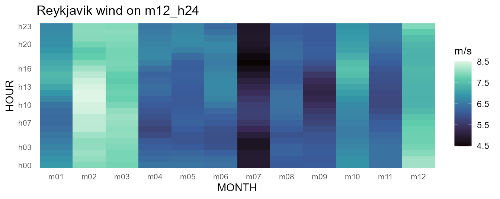
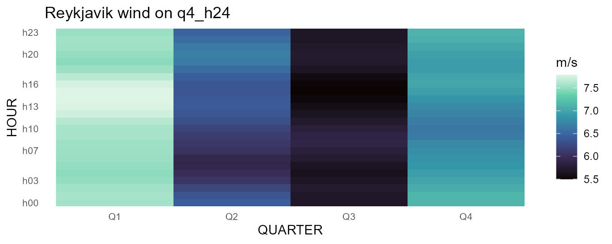
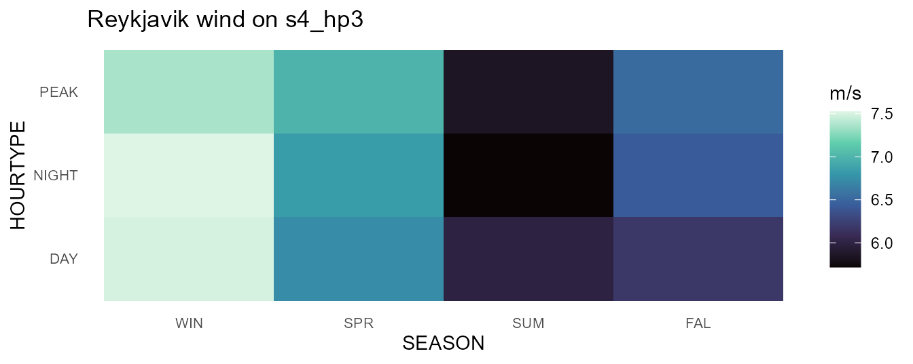
Profiles: lines over timeslices
Because timeslices come back as ordered factors, line plots need only
group=. The same temperature series at monthly resolution
for all three cities:
panel |>
select(city, timeslice, T10M) |>
recast_calendar(cal, to = "MONTH", year = 2019,
rule = "weighted_mean") |>
ggplot(aes(timeslice, T10M, color = city, group = city)) +
geom_line(linewidth = 1) +
scale_color_viridis_d(option = "H", end = 0.8) +
labs(x = NULL, y = "degC",
title = "Monthly mean temperature, 2019") +
theme_calendar()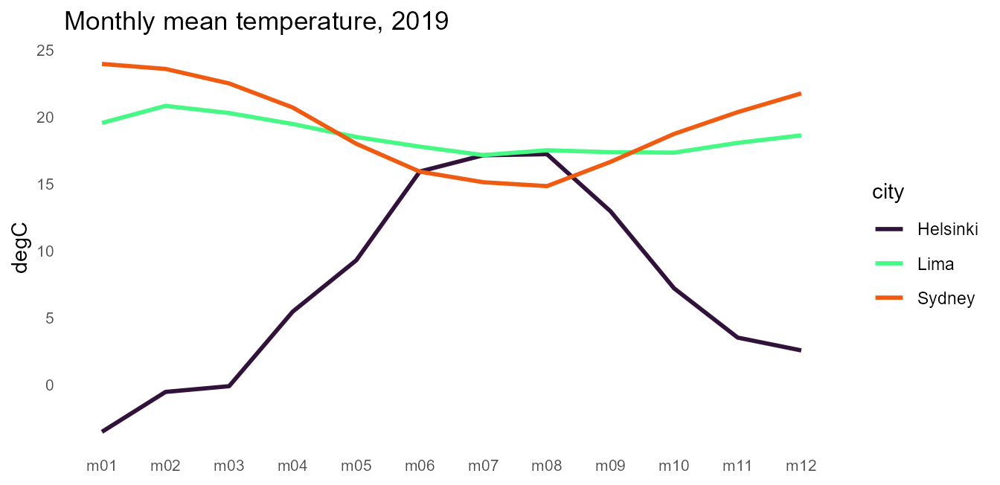
Diurnal profiles by season come from recasting to s4_h24
and letting join_calendar() attach the timeframe columns
(prefixed by the calendar’s name, so several calendars can coexist on
one dataset):
panel |>
recast_calendar(cal, calendars$s4_h24, year = 2019,
rule = "weighted_mean") |>
join_calendar(calendars$s4_h24, timeframes = TRUE) |>
ggplot(aes(`s4_h24.HOUR`, T10M,
color = `s4_h24.SEASON`, group = `s4_h24.SEASON`)) +
geom_line(linewidth = 0.8) +
facet_wrap(~city) +
scale_color_viridis_d(option = "D", end = 0.85) +
scale_x_discrete(breaks = calendar_breaks(5)) +
labs(x = "hour (UTC)", y = "degC", color = "season",
title = "Seasonal diurnal temperature profiles, 2019") +
theme_calendar()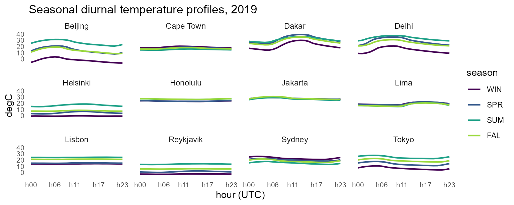
Ranges: ribbons
Roll-your-own composition is plain ggplot. Monthly temperature
envelopes — hourly extremes around the mean — are one grouped
summarise() and a geom_ribbon():
merra2_cities |>
mutate(timeslice = datetime_to_timeslice(datetime, calendars$m12)) |>
summarise(lo = min(T10M), hi = max(T10M), avg = mean(T10M),
.by = c(city, timeslice)) |>
mutate(timeslice = factor(timeslice,
levels = calendars$m12@members$MONTH)) |>
ggplot(aes(timeslice, group = city)) +
geom_ribbon(aes(ymin = lo, ymax = hi, fill = city), alpha = 0.3) +
geom_line(aes(y = avg, color = city), linewidth = 1) +
scale_fill_viridis_d(option = "H", end = 0.8) +
scale_color_viridis_d(option = "H", end = 0.8) +
labs(x = NULL, y = "degC",
title = "Temperature envelopes (hourly extremes), 2019") +
theme_calendar()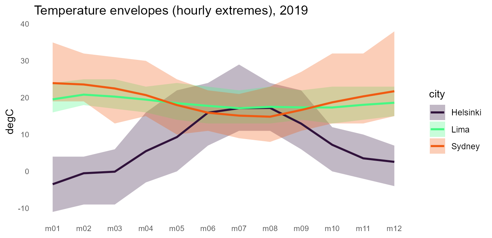
Duration curves
The classic energy view: values sorted descending against cumulative
duration. Shares make the x axis honest —
join_calendar(meta = TRUE) attaches each timeslice’s share
of the year, and the cumulative share times 8760 is hours:
panel |>
select(city, timeslice, W50M) |>
join_calendar(cal, meta = TRUE) |>
arrange(city, desc(W50M)) |>
mutate(hours = cumsum(m12_h24.share) * 8760, .by = city) |>
ggplot(aes(hours, W50M, color = city)) +
geom_step(linewidth = 0.8) +
scale_color_viridis_d(option = "H", end = 0.8) +
labs(x = "hours per year", y = "m/s",
title = "Wind speed duration curves (m12_h24), 2019") +
theme_calendar()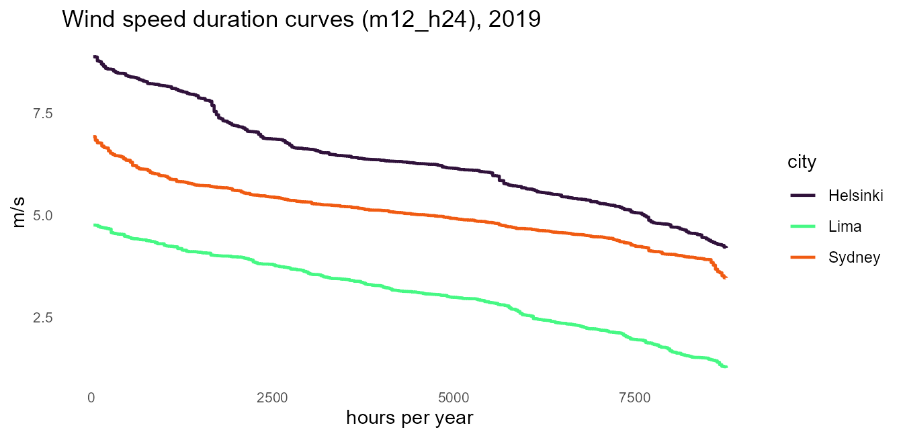
Structure figures
The assembled counterparts need no data at all.
calendar_autoplot() (also
autoplot()/plot()) draws the calendar’s
structure as an icicle, and calendar_plot() is the one-call
heatmap over the same layout machinery:
calendar_autoplot(calendars$m12_h24)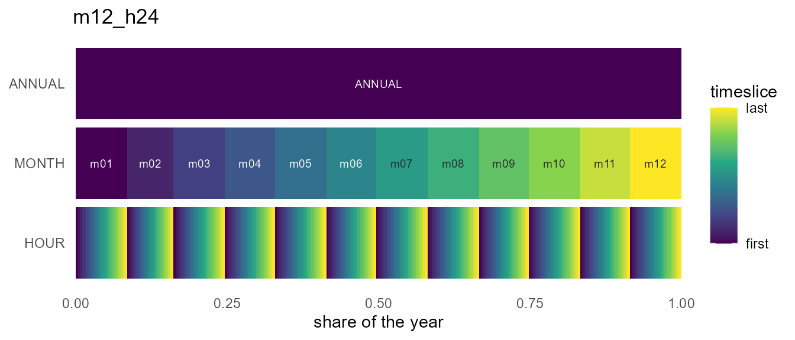
calendar_plot(calendars$m12_h24, hel_timeslices, palette = "H")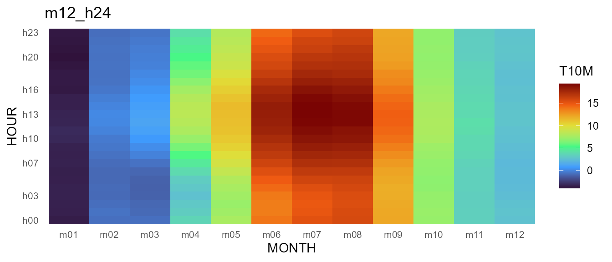
Their shared geometry is available without ggplot2 via
calendar_layout(); the wall form’s frames come from
calendar_wall_layout() and calendar_weekdays()
— all plain data frames, ready for whatever figure this vignette did not
anticipate.
The stack view
type = "stack" draws the same structure axonometrically
— one plane per timeframe, ANNUAL on top, each plane
segmented at the true duration shares. Points of view come as presets
(view = "oblique", "top-down",
"cavalier", "cabinet",
"military", "isometric",
"dimetric", "trimetric",
"perspective"), with rotate = and
direction = to turn and flip the stack;
frame = draws each plane’s sheet, frame_fill =
tints it like glass, and connectors = adds the corner
guides that keep the projection readable:
calendar_autoplot(calendars$s4_hp3, type = "stack",
frame = TRUE, connectors = TRUE,
frame_fill = alpha("grey60", 0.12))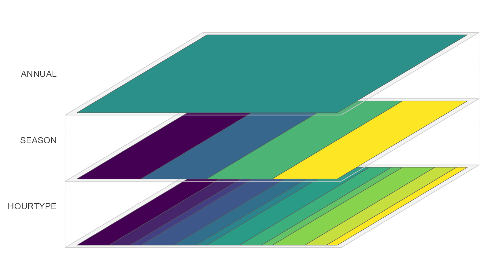
The stack also takes data. data/z hand a
timeslice-keyed value to the plot, and every plane receives it recast to
its own timeframe (rule = and year = are the
recast_calendar() arguments; the base grid is hourly by
default), so the whole stack shares one continuous scale — the annual
mean on top, the finest resolution at the bottom. labels =
names timeframes whose member names are written on the plane, and
palette = NULL lets you attach your own fill scale:
calendar_autoplot(cal, type = "stack",
data = hel_timeslices, z = "T10M",
rule = "weighted_mean", year = 2019,
labels = "MONTH",
colour = c("grey35", "grey35", NA), # no borders on the
frame = TRUE, # dense HOUR plane
frame_fill = alpha("grey60", 0.10)) +
labs(fill = "degC")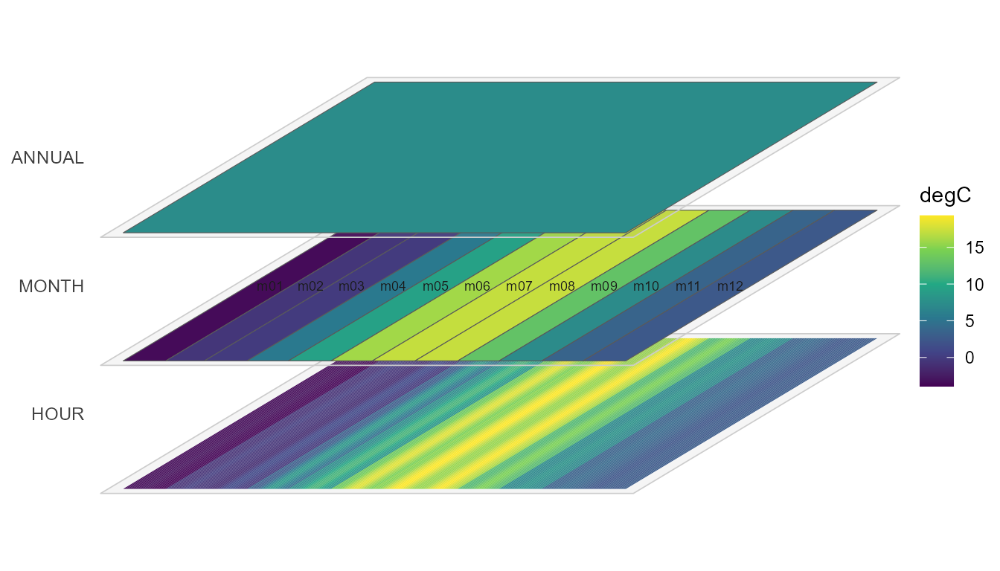
Fiscal figures
Member order flows into every axis and facet automatically. On the
fy04_* calendars (Indian fiscal year: April..March, see
vignette("calendars")) the wall facets and every axis start
in April with no plotting changes at all — and because the wall knows
the real dates, its facets carry the Gregorian year
(APR 2019 .. MAR 2020), making the rollover explicit. The
sample covers calendar 2019, so fiscal 2019 has its last quarter empty —
filter to the fiscal window first, or Jan-Mar 2019 would land on the
Jan-Mar 2020 slots:
hel_fy <- hel |>
filter(datetime >= as.POSIXct("2019-04-01", tz = "UTC"))
calendar_wall_plot(calendar("fy04_d365"), hel_fy, z = "SWGDN",
year = 2019) +
scale_fill_viridis_c(option = "H") +
labs(fill = "W/m2",
title = "Helsinki solar irradiance, fiscal 2019 (Apr-Mar)")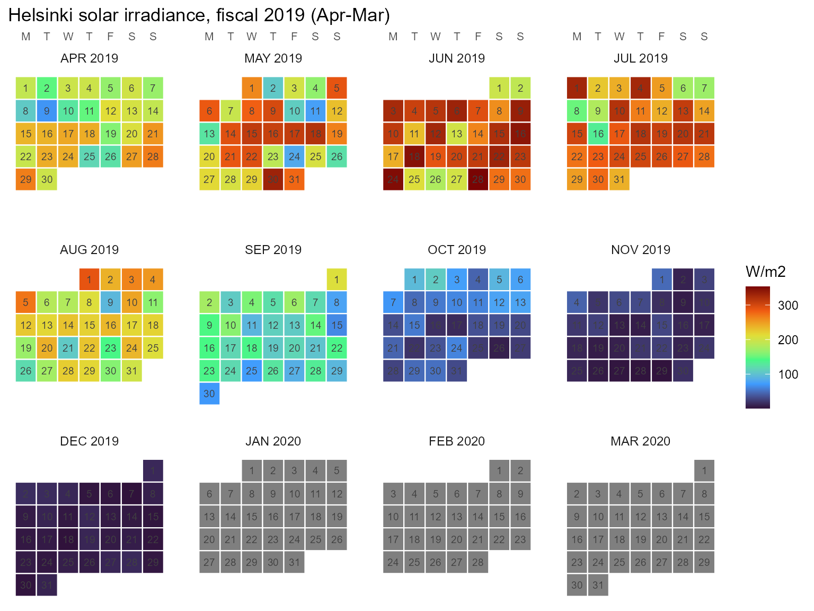
For value axes, label the fiscal months with their calendar year —
the axis runs Apr 2019 .. Mar 2020:
fy <- calendar("fy04_m12")
fy_axis <- tibble(timeslice = fy@members$MONTH) |>
mutate(m = as.integer(sub("^m", "", timeslice)),
label = paste(month.abb[m], if_else(m >= 4L, 2019L, 2020L)),
label = factor(label, levels = label))
hel_fy |>
mutate(timeslice = datetime_to_timeslice(datetime, fy)) |>
summarise(SWGDN = mean(SWGDN), .by = timeslice) |>
left_join(fy_axis, by = "timeslice") |>
ggplot(aes(label, SWGDN)) +
geom_col(fill = "#1AE4B6") + # turbo (viridis H) at ~0.35
scale_x_discrete(drop = FALSE) + # keep the empty Jan-Mar 2020 slots
labs(x = NULL, y = "W/m2",
title = "Helsinki mean solar irradiance, fiscal 2019") +
theme_calendar(axis.text.x = element_text(angle = 45, hjust = 1))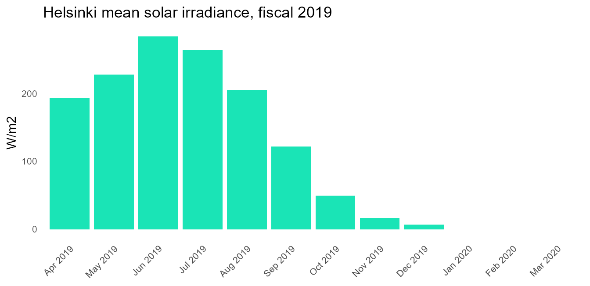
For the spatial dimension, the sibling package geoscales draws region
hierarchies and choropleths the same way (whole-plot
geoscale_plot()/geoscale_autoplot() over
geoscale_layout()); see its “Plotting geoscales” article.
geom_calendar*() is the stack’s only composable geom family
— spatial maps facet and dissolve rather than layer.